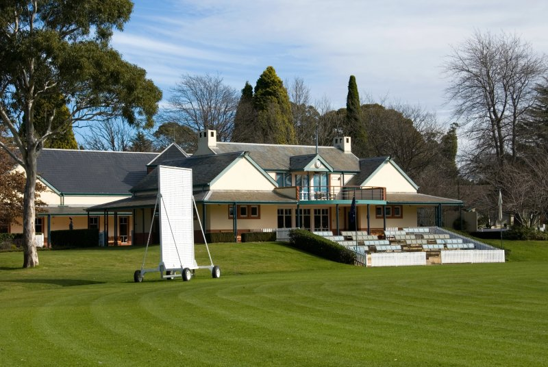

As Southern Highlands locals, we have over 20 year’s experience of house painting, both internally and externally in Bowral.
Is Your Bowral Home Needing an Update?
Bowral, the heart of the Southern Highlands, is not just a prestigious location but a community steeped in elegance and charm. One of the most effective methods to elevate your Bowral home’s allure and market value is through professional painting. A fresh layer of paint boosts curb appeal, imbuing your residence with a sense of renewal and sophistication.
Bowral homes are renowned for their beauty and style, particularly those with exemplary paintwork. In the current market, these homes are fetching impressive sale prices. If your residence is showing signs of age with fading or peeling paint, it might be time to consider a professional repaint.

Why Not Just DIY Your House Painting?
While repainting your home’s exterior can be a fulfilling project, in an area like Bowral, where every detail matters, the expertise of a professional painter is invaluable. The final coat of paint is a crucial aspect of a home’s presentation. A professionally executed paint job ensures any minor imperfections are skillfully masked, guaranteeing your home looks nothing short of magnificent.
At Southern Highlands Painters, we guide you through the entire painting process. From selecting colours that complement Bowral’s unique charm to preparing your home by removing old paint, sanding surfaces, and conducting repairs, we ensure a flawless finish.
“When you hire me, you’re not getting a contractor who drives in from Wollongong or Sydney. You’re getting your neighbour.
Dan Eaton, Southern Highlands Painters
Proudly servicing Bowral and the wider Southern Highlands
About Us At Southern Highlands Painters
Our team has been beautifying homes in Bowral for over 20 years, embracing the local lifestyle and community. You might find us enjoying breakfast at The Press Shop Café or a quick tradie’s lunch from Gumnut Patisserie in Bowral’s main street.
We are proud to be part of Bowral’s vibrant community, participating in local events like the Tulip Time Festival at Corbett Gardens and the Bowral Classic cycling event.
Our Local Bowral House Painting Services Include
Interior Painting
Specialising in painting walls, architraves, doors, and door jambs, we ensure each interior space reflects the sophistication expected in Bowral homes.
Exterior Painting
From brick walls to weatherboards and detailed trims, our exterior painting services enhance the distinct character of Bowral residences, ensuring they stand out for their elegance and charm.
Our Process
Free Consultation & Quote
We visit your Bowral property, discuss your goals and colours, and provide a detailed, no-obligation quote.
Careful Preparation
Cleaning, sanding, repairs and masking — the unglamorous work that determines how the finish lasts.
Expert Application
Premium paints applied with the technique and patience the Southern Highlands climate demands.
Final Walkthrough
We walk the finished job with you to make sure every detail meets our standard, and yours.
Call to Action: Embrace the beauty and prestige of Bowral in your home with a professional paint job that reflects the area’s distinguished ambiance.
Whether it’s out-of-date, showing signs of wear, or newly renovated, our skilled team is adept in various painting techniques suitable for every style and era. We help you choose the right colours and finishes to match your home’s character and your personal style.
Don’t wait to transform your home into the space of your dreams. For Bowral house painters, contact us today for a free, no-obligation quote. Experience the difference with our dedicated, local team in the Southern Highlands. Let’s work together to make your home a masterpiece.